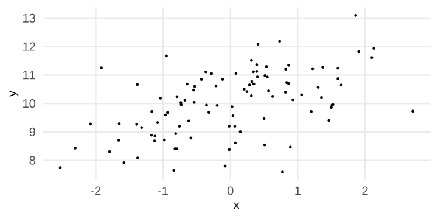
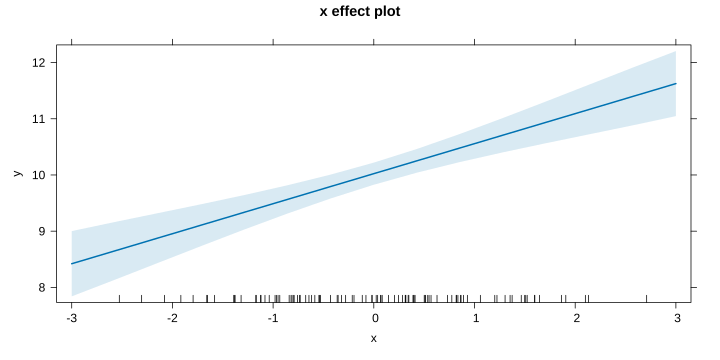
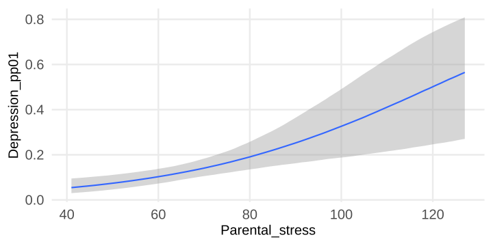

mean(y)
#> [1] 100
sd(y)
#> [1] 50Generalized Linear Models with brms
Filippo Gambarota
Recap about linear models
(almost) everything is a linear model
Most of the statistical analysis that you usually perfom, is essentially a linear model.
- The t-test is a linear model where a numerical variable
yis predicted by a factor with two levelsx - The one-way anova is a linear model where a numerical variable
yis predicted by one factor with more than two levelsx - The correlation is a linear model where a numerical variable
yis predicted by another numerical variablex - The ancova is a linear model where a numerical variable
yis predicted by a numerical variablexand a factor with two levelsg - …
What is a linear model?
Let’s start with a single variable y. We assume that the variable comes from a Normal distribution:
What is a linear model?
What we can do with this variable? We can estimate the parameters that define the Normal distribution thus \(\mu\) (the mean) and \(\sigma\) (the standard deviation).
What is a linear model?
Using a linear model we can just fit a model without predictors, also known as intercept-only model.
#>
#> Call:
#> glm(formula = y ~ 1, family = gaussian(link = "identity"))
#>
#> Coefficients:
#> Estimate Std. Error t value Pr(>|t|)
#> (Intercept) 100 5 20 <2e-16 ***
#> ---
#> Signif. codes: 0 '***' 0.001 '**' 0.01 '*' 0.05 '.' 0.1 ' ' 1
#>
#> (Dispersion parameter for gaussian family taken to be 2500)
#>
#> Null deviance: 247500 on 99 degrees of freedom
#> Residual deviance: 247500 on 99 degrees of freedom
#> AIC: 1069.2
#>
#> Number of Fisher Scoring iterations: 2What is a linear model?
I am using glm because I want to estimate parameters using Maximul Likelihood, but the results are the same as using lm.
Basically we estimated the mean (Intercept) and the standard deviation Dispersion, just take the square root thus 50.
What we are doing is essentially finding the \(\mu\) and \(\sigma\) that maximised the log-likelihood of the model fixing the observed data.
What is a linear model?
What is a linear model?
And assuming that we know \(\sigma\) (thus fixing it at 50):
What is a linear model?
Thus, with the estimates of glm, we have this model fitted on the data:
Including a predictor
When we include a predictor, we are actually try to explain the variability of y using a variable x. For example, this is an hypothetical relationship:

Seems that there is a positive (linear) relationship between x and y. We can try to improve the previous model by adding the predictor:
#>
#> Call:
#> glm(formula = y ~ x, family = gaussian(link = "identity"))
#>
#> Coefficients:
#> Estimate Std. Error t value Pr(>|t|)
#> (Intercept) 9.93465 0.09996 99.383 < 2e-16 ***
#> x 0.36029 0.08750 4.118 7.99e-05 ***
#> ---
#> Signif. codes: 0 '***' 0.001 '**' 0.01 '*' 0.05 '.' 0.1 ' ' 1
#>
#> (Dispersion parameter for gaussian family taken to be 0.9971643)
#>
#> Null deviance: 114.629 on 99 degrees of freedom
#> Residual deviance: 97.722 on 98 degrees of freedom
#> AIC: 287.48
#>
#> Number of Fisher Scoring iterations: 2
Assumptions of the linear model
More practicaly, we are saying that the model allows for varying the mean i.e., each x value can be associated with a different \(\mu\) but with a fixed (and estimated) \(\sigma\).
Generalized linear models
Recipe for a GLM
- Random Component
- Systematic Component
- Link Function
Random Component
The random component of a GLM identify the response variable \(y\) coming from a certain probability distribution.
Random Component
- In practice, by definition the GLM is a model where the random component is a distribution of the Exponential Family. For example the Gaussian distribution, the Gamma distribution or the Binomial are part of the Exponential Family.
- These distribution can be described using a location parameter (e.g., the mean) and a scale parameter (e.g., the variance).
- The distributions are defined by parameters (e.g., \(\mu\) and \(\sigma\) for the Gaussian or \(\lambda\) for the Poisson). The location (or mean) can be directly one of the parameter or a combination of parameters.
Random Component, Poisson example
For example, the Poisson distribution is defined as:
\[ f(k,\lambda) = Pr(X = k) = \frac{\lambda^k e^{-\lambda}}{k!} \]
Where \(k\) is the number of events and \(\lambda\) (the only parameter) is the rate.
Random Component, Poisson example
The mean or location of the Poisson is \(\lambda\) and also the scale or variance is \(\lambda\). Compared to the Gaussian, there are no two parameters.
Random Component
To sum-up, the random component represents the assumption about the nature of our response variable. With GLM we want to include predictors to explain systematic changes of the mean (but also the scale/variance) of the random component.
Assuming a Gaussian distribution, we try to explain how the mean of the Gaussian distribution change according to our predictors. For the Poisson, we include predictors on the \(\lambda\) parameters for example.
The Random Component is called random, beacause it determines how the error term \(\epsilon\) of our model is distributed.
Systematic Component
The systematic component of a GLM is the combination of predictors (i.e., independent variables) that we want to include in the model.
The systematic component is also called linear predictor \(\eta\) and is usually written in equation terms as: \[ \eta_i = \beta_0 + \beta_1 x_{i1} + \beta_2 x_{i2} + \cdots + \beta_p x_{ip} \]
Note that I am omitting the \(+ \epsilon_i\) that you usually find at the end because this is the combination of predictors without errors.
Systematic Component, an example
Assuming that we have two groups and we want to see if there are differences in a depression score. This is a t-test, or better a linear model, or better a GLM.
Ignoring the random component, we can have a systematic component written in this way:
\[ \eta_i = \beta_0 + \beta_1{\mbox{group}_i} \]
Assuming that the group is dummy-coded, \(\beta_0\) is the mean of the first group and \(\beta_1\) is the difference between the two groups. In other terms, these are the true or estimated values without the error (i.e., the random component).
Systematic Component, an example
Another example, assuming we have the same depression score and we want to predict it with an anxiety score. The blue line is the true/estimated regression line where \(\eta_i\) is the expected value for the observation \(x_i\). The red segments are the errors or residuals i.e., the random component.
Systematic Component
To sum-up, the systematic component is the combination of predictors that are used to predict the mean of the distribution that is used as random component. The errors part of the model is distributed as the random component.
Link Function
The final element is the link function. The idea is that we need a way to connect the systematic component \(\eta\) to the random component mean \(\mu\).
The link function \(g(\mu)\) is an invertible function that connects the mean \(\mu\) of the random component with the linear combination of predictors.
Thus \(\eta_i = g(\mu_i)\) and \(\mu_i = g(\eta_i)^{-1}\). The systematic component is not affected by \(g()\) while the relationship between \(\mu\) and \(\eta\) changes using different link functions.
\[ g(\mu_i) = \eta_i = \beta_0 + \beta_1 x_{i1} + \beta_2 x_{i2} + \cdots + \beta_p x_{ip} \]
\[ \mu_i = g(\eta_i)^{-1} = \eta_i = \beta_0 + \beta_1 x_{i1} + \beta_2 x_{i2} + \cdots + \beta_p x_{ip} \]
Link function
The simplest link function is the identity link where \(g(\mu) = \mu\) and correspond to the standard linear model. In fact, the linear regression is just a GLM with a Gaussian random component and the identity link function.
| Family | Link | Range |
|---|---|---|
gaussian |
identity | \[(-\infty,+\infty)\] |
gamma |
log | \[(0,+\infty)\] |
binomial |
logit | \[\frac{0, 1, ..., n_{i}}{n_{i}}\] |
binomial |
probit | \[\frac{0, 1, ..., n_{i}}{n_{i}}\] |
poisson |
log | \[0, 1, 2, ...\] |
Gaussian GLM
Thus remember that when you do a lm or lmer you are actually doing a GLM with a Gaussian random component and an identity link function. You are including predictors (systematic component) explaining changes in the mean of the Gaussian distribution.
Gaussian GLM, a simple simulation
We can understand the GLM recipe trying to simulate a simple model. Let’s simulate a relationship between two numerical variables (like the depression and anxiety example).
N <- 20
anxiety <- rnorm(N, 0, 1) # anxiety scores
b0 <- 0.3 # intercept, depression when anxiety = 0
b1 <- 0.5 # increase in depression for 1 increase in anxiety
# systematic component
eta <- b0 + b1 * anxiety
dat <- data.frame(anxiety, b0, b1, eta)
head(dat)#> anxiety b0 b1 eta
#> 1 0.4892000 0.3 0.5 0.54460001
#> 2 -1.5912630 0.3 0.5 -0.49563148
#> 3 -0.4770213 0.3 0.5 0.06148934
#> 4 -1.8916850 0.3 0.5 -0.64584248
#> 5 -0.4024015 0.3 0.5 0.09879926
#> 6 0.7335647 0.3 0.5 0.66678234Gaussian GLM, a simple simulation
eta is the linear predictor (without errors):
Thus the expected value of a person with \(\mbox{anxiety} = -1\) is \(\beta_0 + \beta_1\times(-1)\) thus -0.2.
Gaussian GLM, a simple simulation
Now, for a realistic simulation we need some random errors. The random component here is a Gaussian distribution thus each observed (or simulated) value is the systematic component plus the random error \(\mbox{depression}_i = \eta_i + \epsilon_i\).
The errors (or residuals) are assumed to be normally distributed with \(\mu = 0\) and variance \(\sigma^2_{\epsilon}\) (the residual standard deviation).
Gaussian GLM, a simple simulation
This is the simulated dataset. The blue line is the linear predictor and the red segments are the Gaussian residuals.
Gaussian GLM, a simple simulation
If we plot the red segments we have roughly a Gaussian distribution. This is the assumption of the GLM with a Gaussian random component.
What about the link function?
The link function for the Gaussian GLM is by default the identity. Identity means that \(\eta_i = \mu_i\), thus there is no transformation. Within each distribution object in R there is the link function and the inverse:
# this is the family (or random component) and the link function. doing a lm() is like glm(family = gaussian(link = "identity"))
fam <- gaussian(link = "identity")
fam$linkfun # link function specifed above#> function (mu)
#> mu
#> <environment: namespace:stats>#> function (eta)
#> eta
#> <environment: namespace:stats>What about the link function?
With the identity, the link function has no effect.
#> [1] 0.54460001 -0.49563148 0.06148934 -0.64584248 0.09879926 0.66678234#> [1] 0.54460001 -0.49563148 0.06148934 -0.64584248 0.09879926 0.66678234But with other GLMs, (e.g., logistic regression) the link function is the core element.
Gaussian GLM, a simple simulation
A more compact (and useful) way to simulate the data is:
In this way is more clear that we are generating data from a normal distribution with fixed \(\sigma^2_{\epsilon}\) and we are modeling the mean.
Parameters intepretation
Parameters intepretation
Let’s make a more complex example with a Gaussian GLM with more than one predictor. We have a dataset with 150 observations and some variables.
#> depression age group anxiety
#> 1 -0.2173456 23 g1 0.0022093
#> 2 0.3273544 40 g2 -0.1100926
#> 3 1.0405812 24 g1 0.4261357
#> 4 2.8139121 33 g2 1.8146185
#> 5 0.7347837 30 g1 -0.1817395
#> 6 0.6209260 26 g2 -1.2488724We want to predict the depression with anxiety, group and age.
Parameters intepretation
Let’s fit the model (here using lm but is a GLM!):
#>
#> Call:
#> lm(formula = depression ~ anxiety + group + age, data = dat)
#>
#> Residuals:
#> Min 1Q Median 3Q Max
#> -2.0837 -0.6937 -0.1653 0.5869 3.1663
#>
#> Coefficients:
#> Estimate Std. Error t value Pr(>|t|)
#> (Intercept) -0.229923 0.326055 -0.705 0.48183
#> anxiety 0.526979 0.081160 6.493 1.23e-09 ***
#> groupg2 0.367025 0.165569 2.217 0.02819 *
#> age 0.024005 0.009075 2.645 0.00906 **
#> ---
#> Signif. codes: 0 '***' 0.001 '**' 0.01 '*' 0.05 '.' 0.1 ' ' 1
#>
#> Residual standard error: 1.013 on 146 degrees of freedom
#> Multiple R-squared: 0.2574, Adjusted R-squared: 0.2421
#> F-statistic: 16.87 on 3 and 146 DF, p-value: 1.844e-09How do you intepret the output? and the model parameters?
Bayesian Models
Bayesian vs Frequentists GLM
What about the Bayesian version of the previous model? Actually the main difference is that we need to include the priors to obtain posterior distributions about model parameters. The likelihood part is extactly the same as non-bayesian models.
brms
There are several R packages for estimating Bayesian GLMs. The most complete is called brms.
There are also other options such as rstanarm. rstanarm is faster but less flexible. brms include all GLMs (and also other models such as meta-analysis, multivariate, etc.) but is slower and requires more knowledge.
The syntax is the same as lm or glm and also lme4 if you want to include random-effects.
brms
Let’s start with a simple model, predicting the depression with the group. Thus essentially a t-test:
brms
#> Family: gaussian
#> Links: mu = identity; sigma = identity
#> Formula: depression ~ group
#> Data: dat (Number of observations: 150)
#> Draws: 4 chains, each with iter = 2000; warmup = 1000; thin = 1;
#> total post-warmup draws = 4000
#>
#> Regression Coefficients:
#> Estimate Est.Error l-95% CI u-95% CI Rhat Bulk_ESS Tail_ESS
#> Intercept 0.56 0.13 0.31 0.82 1.00 3601 2924
#> groupg2 0.44 0.18 0.08 0.80 1.00 3456 2832
#>
#> Further Distributional Parameters:
#> Estimate Est.Error l-95% CI u-95% CI Rhat Bulk_ESS Tail_ESS
#> sigma 1.11 0.07 1.00 1.26 1.00 3865 2502
#>
#> Draws were sampled using sampling(NUTS). For each parameter, Bulk_ESS
#> and Tail_ESS are effective sample size measures, and Rhat is the potential
#> scale reduction factor on split chains (at convergence, Rhat = 1).brms vs lm
Firstly, let’s compare the two models:
#>
#> Call:
#> lm(formula = depression ~ group, data = dat)
#>
#> Residuals:
#> Min 1Q Median 3Q Max
#> -2.7678 -0.7283 -0.1033 0.6176 3.7671
#>
#> Coefficients:
#> Estimate Std. Error t value Pr(>|t|)
#> (Intercept) 0.5795 0.1335 4.341 2.62e-05 ***
#> groupg2 0.3170 0.1888 1.679 0.0952 .
#> ---
#> Signif. codes: 0 '***' 0.001 '**' 0.01 '*' 0.05 '.' 0.1 ' ' 1
#>
#> Residual standard error: 1.156 on 148 degrees of freedom
#> Multiple R-squared: 0.0187, Adjusted R-squared: 0.01207
#> F-statistic: 2.82 on 1 and 148 DF, p-value: 0.09521brms results
Firsly we can have a look at the posterior distributions of the parameters:
Model checking using simulations
We can check the model fit using simulations. In Bayesian terms this is called Posterior Predictive Checks. For standard models we use only the likelihood.
Model checking using simulations
With the Bayesian models we can just use the brms::pp_check() function that compute the posterior predictive checks:
Setting priors
By default brms use some priors. You can see the actual used priors using:
#> prior class coef group resp dpar nlpar lb ub
#> (flat) b
#> (flat) b groupg2
#> student_t(3, 0.9, 2.5) Intercept
#> student_t(3, 0, 2.5) sigma 0
#> source
#> default
#> (vectorized)
#> default
#> defaultYou can also see the priors before fitting the model:
#> prior class coef group resp dpar nlpar lb ub
#> (flat) b
#> (flat) b groupg2
#> student_t(3, 0.6, 2.5) Intercept
#> student_t(3, 0, 2.5) sigma 0
#> source
#> default
#> (vectorized)
#> default
#> defaultCentering, re-scaling and contrasts coding
Centering, re-scaling and contrasts coding
When fitting a model is important to transform the predictors according to the hypothesis that we have and the intepretation of parameters.
Centering (for numerical variables) and contrasts coding (for categorical variables) are the two main strategies affecting the intepretation of model parameters.
The crucial point is that also the prior distribution need to be adapted when using different parametrizations of the same model.
Rescaling
For example, let’s assume to have the relationship between self-esteem (from 0 to 20) and the graduation mark from 66 to 111 (110 cum laude):
Rescaling
Let’s fit a simple regression:
#> Family: gaussian
#> Links: mu = identity; sigma = identity
#> Formula: se ~ mark
#> Data: dat_mark (Number of observations: 30)
#> Draws: 4 chains, each with iter = 2000; warmup = 1000; thin = 1;
#> total post-warmup draws = 4000
#>
#> Regression Coefficients:
#> Estimate Est.Error l-95% CI u-95% CI Rhat Bulk_ESS Tail_ESS
#> Intercept -7.96 2.10 -12.20 -3.85 1.00 3159 2822
#> mark 0.13 0.02 0.09 0.18 1.00 3186 2813
#>
#> Further Distributional Parameters:
#> Estimate Est.Error l-95% CI u-95% CI Rhat Bulk_ESS Tail_ESS
#> sigma 1.63 0.22 1.27 2.11 1.00 2741 2599
#>
#> Draws were sampled using sampling(NUTS). For each parameter, Bulk_ESS
#> and Tail_ESS are effective sample size measures, and Rhat is the potential
#> scale reduction factor on split chains (at convergence, Rhat = 1).Rescaling, problems?
We are using the default priors that are basically non-informative. What about setting appropriate or more informative priors?
#> prior class coef group resp dpar nlpar lb ub source
#> (flat) b default
#> (flat) b mark (vectorized)
#> student_t(3, 3.9, 2.5) Intercept default
#> student_t(3, 0, 2.5) sigma 0 defaultRescaling, problems?
There are a couple of problems:
Interceptis the expected self-esteem score for people with 0 graduation mark (is that plausible?)markis the expected increase in self-esteem for a unit increase in the graduation mark. (is that intepretable?)
Assuming that we want to put priors, how do you choose the distribution and the parameters?
Rescaling, problems?
The first problem is that the Intercept is meaningless. Thus we can, for example, mean-center the mark variable. The slope is the same, we are only shifting the x. The intercept is different.
Intercept prior
Now the intercept is the expected self esteem value when mark is on average. Given that the values ranges from 0 to 20, we could put less probability of extreme values (for average marks, around 88) we could imagine also average value for self-esteem (around 10).
Intercept prior, centering
Slope prior, rescaling
Then for the slope, probably there is too much granularity in the mark variable. 1 point increase is very tiny. To improve the model interpretation we can rescale the variable giving more weight to the unit increase.
Slope prior, rescaling
Now we have a more practical idea of size of the slope. We can use a very vague but not flat prior (the default) considering that 0 means no effect. Remember that now the slope is the increase in self-esteem for incrase of 10 points in the mark.
Slope prior, rescaling
The previus prior is very uninformative but is simply excluding impossible values. A slope of 10 means that increasing by 10 points would produce an increase that ranges the entire available scale.
Refitting the model1
We can now refit the model using our priors and rescaling/centering
#> Family: gaussian
#> Links: mu = identity; sigma = identity
#> Formula: se ~ mark10c
#> Data: dat_mark (Number of observations: 30)
#> Draws: 4 chains, each with iter = 2000; warmup = 1000; thin = 1;
#> total post-warmup draws = 4000
#>
#> Regression Coefficients:
#> Estimate Est.Error l-95% CI u-95% CI Rhat Bulk_ESS Tail_ESS
#> Intercept 3.58 0.32 2.95 4.23 1.00 3172 2437
#> mark10c 0.60 0.21 0.18 0.99 1.00 3775 2708
#>
#> Further Distributional Parameters:
#> Estimate Est.Error l-95% CI u-95% CI Rhat Bulk_ESS Tail_ESS
#> sigma 1.75 0.24 1.35 2.31 1.00 3378 2792
#>
#> Draws were sampled using sampling(NUTS). For each parameter, Bulk_ESS
#> and Tail_ESS are effective sample size measures, and Rhat is the potential
#> scale reduction factor on split chains (at convergence, Rhat = 1).Contrasts coding
Contrasts coding is a vast and difficult topic. The basic idea is that when you have categorical predictors, with or without interactions, the way you set the contrasts will impact the intepretation of model parameters (and the priors).
By default in R, categorical variables are coded using the so-called dummy coding or treatment coding.
Contrasts coding
#> b c
#> a 0 0
#> b 1 0
#> c 0 1#> (Intercept) xb xc
#> 1 1 0 0
#> 2 1 0 0
#> 3 1 0 0
#> 4 1 0 0
#> 5 1 0 0
#> 6 1 1 0
#> 7 1 1 0
#> 8 1 1 0
#> 9 1 1 0
#> 10 1 1 0
#> 11 1 0 1
#> 12 1 0 1
#> 13 1 0 1
#> 14 1 0 1
#> 15 1 0 1
#> attr(,"assign")
#> [1] 0 1 1
#> attr(,"contrasts")
#> attr(,"contrasts")$x
#> [1] "contr.treatment"Contrasts coding
With a factor with \(p\) levels, we need \(p - 1\) variables representing contrasts. dummy-coding means that there will be a reference level (usually the first level) and \(p - 1\) contrasts comparing the other levels with the first level (baseline).
An example with the iris dataset:
levels(iris$Species)
#> [1] "setosa" "versicolor" "virginica"
fit_dummy <- lm(Sepal.Length ~ Species, data = iris)
summary(fit_dummy)
#>
#> Call:
#> lm(formula = Sepal.Length ~ Species, data = iris)
#>
#> Residuals:
#> Min 1Q Median 3Q Max
#> -1.6880 -0.3285 -0.0060 0.3120 1.3120
#>
#> Coefficients:
#> Estimate Std. Error t value Pr(>|t|)
#> (Intercept) 5.0060 0.0728 68.762 < 2e-16 ***
#> Speciesversicolor 0.9300 0.1030 9.033 8.77e-16 ***
#> Speciesvirginica 1.5820 0.1030 15.366 < 2e-16 ***
#> ---
#> Signif. codes: 0 '***' 0.001 '**' 0.01 '*' 0.05 '.' 0.1 ' ' 1
#>
#> Residual standard error: 0.5148 on 147 degrees of freedom
#> Multiple R-squared: 0.6187, Adjusted R-squared: 0.6135
#> F-statistic: 119.3 on 2 and 147 DF, p-value: < 2.2e-16Contrasts coding
Contrasts coding
Another coding scheme could be the so called Successive Differences Contrast Coding. The idea is to compare level 2 with level 1, level 3 with level 2 and so on.
Contrasts coding
#>
#> Call:
#> lm(formula = Sepal.Length ~ Species_sdif, data = iris)
#>
#> Residuals:
#> Min 1Q Median 3Q Max
#> -1.6880 -0.3285 -0.0060 0.3120 1.3120
#>
#> Coefficients:
#> Estimate Std. Error t value Pr(>|t|)
#> (Intercept) 5.84333 0.04203 139.020 < 2e-16 ***
#> Species_sdif2-1 0.93000 0.10296 9.033 8.77e-16 ***
#> Species_sdif3-2 0.65200 0.10296 6.333 2.77e-09 ***
#> ---
#> Signif. codes: 0 '***' 0.001 '**' 0.01 '*' 0.05 '.' 0.1 ' ' 1
#>
#> Residual standard error: 0.5148 on 147 degrees of freedom
#> Multiple R-squared: 0.6187, Adjusted R-squared: 0.6135
#> F-statistic: 119.3 on 2 and 147 DF, p-value: < 2.2e-16More on contrasts coding
There are few very useful papers about contrasts coding:
Hypothesis testing and effect size
Hypothesis testing
The easiest way to test an hypothesis similarly to the frequentist framework is by checking if the null value of a certain test is contaned or not in the Credible Interval or the Highest Posterior Density Interval.
In the frequentist framework, the p value lower than \(\alpha\) corresponds to a confidence interval to \(1 - \alpha\) level that does not contains the null value (e.g., 0).
brms::hypothesis()
The brms::hypothesis() function is a very nice way to test hypotheses into a bayesian framework.
Bayesian \(R^2\) (Gelman et al. 2019)
Gelman et al. (2019) explained a generalization of the common \(R^2\) to be applied for Bayesian Generalized Linear Models.
\[ \text{Bayesian } R^2_s = \frac{ \mathrm{Var}_{n=1}^{N}\left( y_n^{\text{pred}, s} \right) }{ \mathrm{Var}_{n=1}^{N}\left( y_n^{\text{pred}, s} \right) + \mathrm{Var}_{\text{res}}^s } \]
There are few important points:
- This works for any GLM (unlike the usual \(R^2\))
- Different models on the same dataset cannot be compared https://avehtari.github.io/bayes_R2/bayes_R2.html
Extracting posteriors
https://www.andrewheiss.com/blog/2022/09/26/guide-visualizing-types-posteriors/ https://www.andrewheiss.com/blog/2022/09/26/guide-visualizing-types-posteriors/#complete-cheat-sheet
Bayes Factor
As an example we can start with the classical coin-flip experiment. We need to guess if a coin is fair or not. Firstly let’s formalize our prior beliefs in probabilistic terms:
Bayes Factor
Now we collect data and we observe \(x = 40\) tails out of \(k = 50\) trials thus \(\hat{\pi} = 0.8\) and compute the likelihood:
Bayes Factor
Finally we combine, using the Bayes rule, prior and likelihood to obtain the posterior distribution:
Bayes Factor
The Bayes Factor (BF) — also called the likelihood ratio, for obvious reasons — is a measure of the relative support that the evidence provides for two competing hypotheses, \(H_0\) and \(H_1\) (~ \(\pi\) in our previous example). It plays a key role in the following odds form of Bayes’s theorem.
\[ \frac{p(H_0|D)}{p(H_1|D)} = \frac{p(D|H_0)}{p(D|H_1)} \times \frac{p(H_0)}{p(H_1)} \]
The ratio of the priors \(\frac{p(H_0)}{p(H_1)}\) is called the prior odds of the hypotheses; and, the ratio of the poosteriors \(\frac{p(H_0| D)}{p(H_1 | D)}\) is called the posterior odds of the hypotheses. Thus, the above (odds form) of Bayes’s Theorem can be paraphrased as follows
\[ \text{posterior odds} = \text{Bayes Factor} \times \text{prior odds} \]
Calculating the Bayes Factor using the SDR
Calculating the BF can be challenging in some situations. The Savage-Dickey density ratio (SDR) is a convenient shortcut to calculate the Bayes Factor (Wagenmakers et al. 2010). The idea is that the ratio of the prior and posterior density distribution for hypothesis \(H_1\) is an estimate of the Bayes factor calculated in the standard way.
\[ BF_{01} = \frac{p(D|H_0)}{p(D|H_1)} \approx \frac{p(\pi = x|D, H_1)}{p(\pi = x | H_1)} \]
Where \(\pi\) is the parameter of interest and \(x\) is the null value under \(H_0\) (e.g., 0). and \(D\) are the data.
Calculating the Bayes Factor using the SDR
Following the previous example \(H_0: \pi = 0.5\). Under \(H_1\) we use a vague prior by setting \(\pi \sim Beta(1, 1)\).
Say we flipped the coin 20 times and we found that \(\hat \pi = 0.75\).
Calculating the Bayes Factor using the SDR
The ratio between the two black dots is the Bayes Factor.
Bayes Factor in brms
https://vuorre.com/posts/2017-03-21-bayes-factors-with-brms/ https://easystats.github.io/bayestestR/reference/bayesfactor_parameters.html#:~:text=For%20the%20computation%20of%20Bayes,flat%20priors%20the%20null%20is
Be careful with the Bayes Factor
The Bayes Factor computed with hypothesis() or in general the SDR method is highly sensitive to the priors. See also the bayestestR documentation. In general:
- The Bayes Factor requires informative or at least non-flat priors. Remember that in
brmsthe default prior is flat - As the prior scale (e.g., standard deviation) increase, the Bayes Factor tends to suggest evidence for the null hypothesis, even when the null hypothesis is false
This is called Lindley’s paradox. (see Wagenmakers and Ly 2023).
Lindley’s paradox, a simulation
We can just simulate a t-test (or equivalently a parameter of a model) and run the Bayesian model with different prior distribution scale.
For a t-test we are focused on the prior for the (standardized) difference between the means. We can set a prior centered on 0 with different scale.
Here I’m using the BayesFactor package just because is faster for simple model if we are interested in the Bayes Factor pointnull (the same as brms::hypothesis(x, "b = 0")).
Lindley’s paradox, a simulation
Prior Sensitivity Check
Given the sensitivity of Bayesian models to the prior, especially when informative is always a good idea to check the actual impact of priors. Not only for Bayes Factors but also for the posterior distributions.
- Run your model with the prior that are more plausible for you
- Run the same model with priors that are more and less informative
- Check the impact of the prior on your posterior distributions and conclusions
Prior Predictive Check
The prior predictive check is an important process when setting the priors in a regression model. The basic idea is that the posterior distribution is the combination between priors and likelihood (i.e., the data). If we remove likelihood from the equation, we obtain a “posterior” only using information in the prior.
The advantage is that we can simulate data to check if our priors are reasonable according to our model, phenomenon, etc.
In brms there is an argument called sample_prior that can be set to "only" to fit a model ignoring the data:
Prior predictive check
Assuming to have a simple model with a continous and categorical predictor:
#> y x g
#> 1 0.7812706 0.6207567 0
#> 2 -1.1101886 0.0356414 0
#> 3 0.3243795 0.7731545 0
#> 4 1.8243161 1.2724891 0
#> 5 0.6446891 0.3709754 0
#> 6 1.0857640 -0.1628543 0Prior predictive check
We know that x and y are standandardized thus we can think about the effect g in terms of Cohen’s \(d\) and the effect of x in terms of units of standard deviations. Let’s set some priors for \(\beta_1\) and \(\beta_2\).
Prior predictive check
priors <- c(
prior(normal(0, 1), class = "b", coef = "g"),
prior(normal(0, 2), class = "b", coef = "x")
)
fit_prior <- brm(y ~ x + g, data = dat, sample_prior = "only", prior = priors, file = here("slides", "objects", "fit_prior.rds"))
summary(fit_prior)#> Family: gaussian
#> Links: mu = identity; sigma = identity
#> Formula: y ~ x + g
#> Data: dat (Number of observations: 50)
#> Draws: 4 chains, each with iter = 2000; warmup = 1000; thin = 1;
#> total post-warmup draws = 4000
#>
#> Regression Coefficients:
#> Estimate Est.Error l-95% CI u-95% CI Rhat Bulk_ESS Tail_ESS
#> Intercept 0.30 5.00 -8.67 8.82 1.00 2585 1590
#> x 0.03 2.04 -4.00 3.96 1.00 2844 2449
#> g -0.02 1.00 -2.05 1.91 1.00 3089 2397
#>
#> Further Distributional Parameters:
#> Estimate Est.Error l-95% CI u-95% CI Rhat Bulk_ESS Tail_ESS
#> sigma 2.79 3.83 0.08 10.10 1.00 2647 1440
#>
#> Draws were sampled using sampling(NUTS). For each parameter, Bulk_ESS
#> and Tail_ESS are effective sample size measures, and Rhat is the potential
#> scale reduction factor on split chains (at convergence, Rhat = 1).Prior predictive check
Extracting Posterior Distributions
When running a model with lm and glm, all the required information is included into the summary of the model. For each parameter we have the point estimate, standard error, confidence interval, etc.
#>
#> Call:
#> lm(formula = Sepal.Length ~ Petal.Width + Species, data = iris)
#>
#> Residuals:
#> Min 1Q Median 3Q Max
#> -1.3891 -0.3043 -0.0472 0.2528 1.3358
#>
#> Coefficients:
#> Estimate Std. Error t value Pr(>|t|)
#> (Intercept) 4.78044 0.08308 57.543 < 2e-16 ***
#> Petal.Width 0.91690 0.19386 4.730 5.25e-06 ***
#> Speciesversicolor -0.06025 0.23041 -0.262 0.794
#> Speciesvirginica -0.05009 0.35823 -0.140 0.889
#> ---
#> Signif. codes: 0 '***' 0.001 '**' 0.01 '*' 0.05 '.' 0.1 ' ' 1
#>
#> Residual standard error: 0.481 on 146 degrees of freedom
#> Multiple R-squared: 0.6694, Adjusted R-squared: 0.6626
#> F-statistic: 98.53 on 3 and 146 DF, p-value: < 2.2e-16Extracting Posterior Distributions
With Bayesian models we have posterior distributions that can be summarised in different ways. There are several methods and packages to work with posteriors:
Extracting Posterior Distributions
With the as_draws_df we can extract all the samples from the posterior distribution:
#> # A draws_df: 6 iterations, 1 chains, and 6 variables
#> b_Intercept b_mark sigma Intercept lprior lp__
#> 1 -9.6 0.15 1.5 4.3 -3.4 -59
#> 2 -10.2 0.16 1.4 4.1 -3.3 -59
#> 3 -9.0 0.15 1.5 4.6 -3.4 -62
#> 4 -9.0 0.15 1.4 4.3 -3.4 -60
#> 5 -8.7 0.14 1.5 3.8 -3.4 -59
#> 6 -8.0 0.13 1.4 3.7 -3.3 -60
#> # ... hidden reserved variables {'.chain', '.iteration', '.draw'}Extracting Posterior Distributions
#> # A tibble: 3 × 10
#> variable mean median sd mad q5 q95 rhat ess_bulk ess_tail
#> <chr> <dbl> <dbl> <dbl> <dbl> <dbl> <dbl> <dbl> <dbl> <dbl>
#> 1 b_Interce… -7.96 -7.98 2.10 2.05 -11.5 -4.49 1.00 3049. 2798.
#> 2 b_mark 0.133 0.133 0.0230 0.0227 0.0954 0.172 1.00 3064. 2776.
#> 3 sigma 1.63 1.60 0.217 0.211 1.32 2.03 1.00 2706. 2588.HPDI with bayestestR
The bayestestR contains a lot of functions to do inference and post-processing on brms (and also other) models:
The broom package
The broom.mixed package automatically provide the summary() into a data.frame format:
#> # A tibble: 3 × 8
#> effect component group term estimate std.error conf.low conf.high
#> <chr> <chr> <chr> <chr> <dbl> <dbl> <dbl> <dbl>
#> 1 fixed cond <NA> (Intercept) -7.96 2.10 -12.2 -3.85
#> 2 fixed cond <NA> mark 0.133 0.0230 0.0882 0.179
#> 3 ran_pars cond Residual sd__Observa… 1.63 0.217 1.27 2.11More on bayestestR
This is a really amazing package, have a look at the Features section because contains functions and explanations about different ways of summarizing the posterior distribution.
Plotting effects
The brms package contains some functions to plot the effects, such as the conditional_effects() function.
Factorial design example
Factorial design example
We can make a very easy example with a 3x2 factorial design. Let’s load some data:
Factorial design example
We can fit our model with interaction:
Factorial design example
We can create the grid of values:
Factorial design example
We can calculate the cell-means for the Group, averaging over the level of the other factor i.e. the main effect. We can use the tidybayes package.
library(tidybayes)
grid |>
add_epred_draws(object = fit_factorial) |>
group_by(Group, .draw) |>
summarise(y = mean(.epred)) |>
group_by(Group) |>
summarise(median_hdci(y)) |>
head()#> # A tibble: 2 × 7
#> Group y ymin ymax .width .point .interval
#> <fct> <dbl> <dbl> <dbl> <dbl> <chr> <chr>
#> 1 Control 0.185 -0.0671 0.446 0.95 median hdci
#> 2 Experimental 0.128 -0.125 0.395 0.95 median hdciFactorial design example
Same but using emmeans:
Logistic regression example
Logistic regression example
For an overview of the logistic regression we can refer to this material.
Logistic regression using brms
We can fit the same model of the previous slides using the teddy data.
#> ID Children Fam_status Education Occupation Age Smoking_status
#> 1 1 1 Married High school Full-time 42 No
#> 2 2 1 Married High school Full-time 42 No
#> 3 3 1 Married High school Full-time 44 No
#> 4 4 2 Married High school Full-time 48 No
#> 5 5 3 Married Degree or higher Full-time 39 Yes
#> 6 6 2 Married Degree or higher Full-time 38 Ex-smoker
#> Alcool_status Depression_pp Parental_stress Alabama_involvment MSPSS_total
#> 1 No No 75 36 6.500000
#> 2 No No 51 41 5.500000
#> 3 No No 76 42 1.416667
#> 4 No No 88 39 1.083333
#> 5 Yes No 67 35 7.000000
#> 6 No No 61 36 3.333333
#> LTE Partner_cohesion Family_cohesion
#> 1 5 4.333333 2.916667
#> 2 5 4.166667 3.000000
#> 3 4 3.000000 2.500000
#> 4 4 2.166667 2.666667
#> 5 2 4.166667 2.666667
#> 6 0 3.000000 2.583333Logistic regression using brms
Let’s convert the response variable Depression_pp to a binary variable:
Logistic regression using brms
#> Family: bernoulli
#> Links: mu = logit
#> Formula: Depression_pp01 ~ Parental_stress
#> Data: teddy (Number of observations: 379)
#> Draws: 4 chains, each with iter = 2000; warmup = 1000; thin = 1;
#> total post-warmup draws = 4000
#>
#> Regression Coefficients:
#> Estimate Est.Error l-95% CI u-95% CI Rhat Bulk_ESS Tail_ESS
#> Intercept -4.34 0.70 -5.71 -3.01 1.00 2570 2509
#> Parental_stress 0.04 0.01 0.02 0.06 1.00 2937 2486
#>
#> Draws were sampled using sampling(NUTS). For each parameter, Bulk_ESS
#> and Tail_ESS are effective sample size measures, and Rhat is the potential
#> scale reduction factor on split chains (at convergence, Rhat = 1).Logistic regression using brms
Logistic regression using brms
The posterior draws, by default, are always on the linear predictor scale. For the Gaussian model this is not relevant, but here everything is in logit.s
#> # A draws_df: 6 iterations, 1 chains, and 5 variables
#> b_Intercept b_Parental_stress Intercept lprior lp__
#> 1 -4.9 0.045 -2.1 -2.3 -138
#> 2 -5.2 0.050 -2.1 -2.3 -139
#> 3 -3.6 0.024 -2.1 -2.3 -139
#> 4 -4.0 0.031 -2.1 -2.3 -138
#> 5 -3.9 0.029 -2.0 -2.3 -138
#> 6 -5.7 0.057 -2.0 -2.3 -141
#> # ... hidden reserved variables {'.chain', '.iteration', '.draw'}Logistic regression using brms
The intercept is the logit of the probability of success when all predictors are zero.
Logistic regression using brms
The Parental_stress coefficient is the increase in the log-odds of success for a unit increase in the Parental stress.

Logistic regression using brms
When plotting the effects with conditional_effects() we are working on the probability space:

Logistic regression using brms
Logistic regression using brms
Bayesian Workflow
- Nice paper about the Bayesian Workflow: https://sites.stat.columbia.edu/gelman/research/unpublished/Bayesian_Workflow_article.pdf
References
Gelman, Andrew, Ben Goodrich, Jonah Gabry, and Aki Vehtari. 2019. “R-Squared for Bayesian Regression Models.” The American Statistician 73: 307–9. https://doi.org/10.1080/00031305.2018.1549100.
Granziol, Umberto, Maximilian Rabe, Marcello Gallucci, Andrea Spoto, and Giulio Vidotto. 2025. “Not Another Post Hoc Paper: A New Look at Contrast Analysis and Planned Comparisons.” Advances in Methods and Practices in Psychological Science 8 (January). https://doi.org/10.1177/25152459241293110.
Schad, Daniel J, Shravan Vasishth, Sven Hohenstein, and Reinhold Kliegl. 2020. “How to Capitalize on a Priori Contrasts in Linear (Mixed) Models: A Tutorial.” Journal of Memory and Language 110 (February): 104038. https://doi.org/10.1016/j.jml.2019.104038.
Wagenmakers, Eric-Jan, Tom Lodewyckx, Himanshu Kuriyal, and Raoul Grasman. 2010. “Bayesian Hypothesis Testing for Psychologists: A Tutorial on the Savage–Dickey Method.” Cognitive Psychology 60 (May): 158–89. https://doi.org/10.1016/j.cogpsych.2009.12.001.
Wagenmakers, Eric-Jan, and Alexander Ly. 2023. “History and Nature of the Jeffreys-Lindley Paradox.” Archive for History of Exact Sciences 77: 25–72. https://doi.org/10.1007/s00407-022-00298-3.